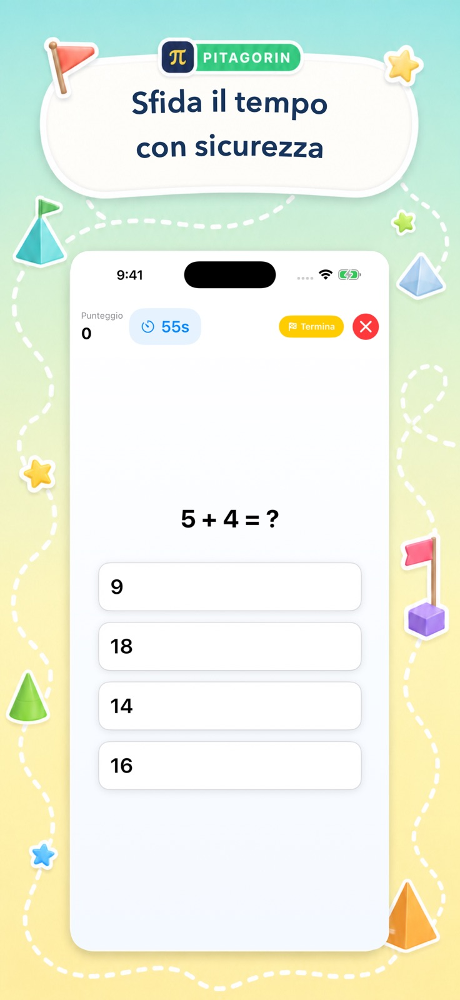
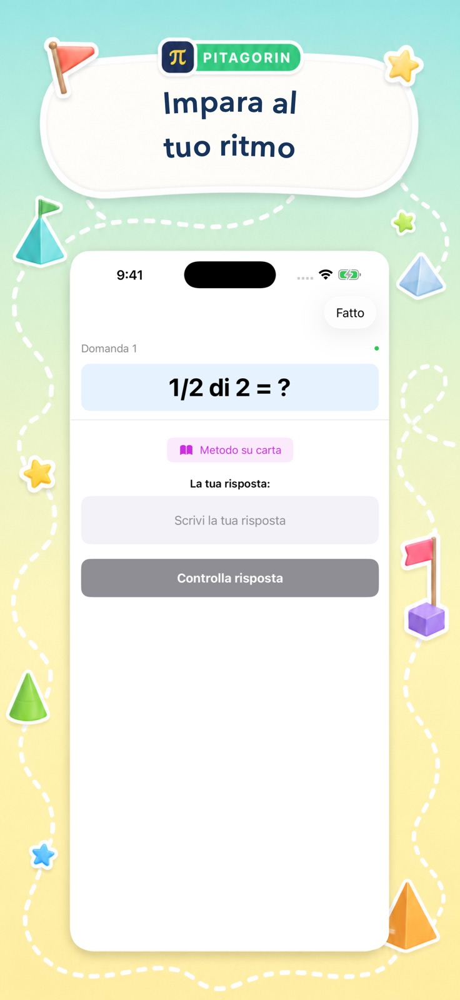
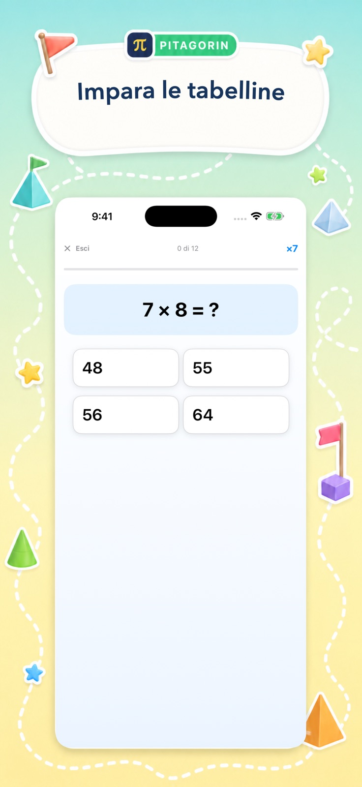
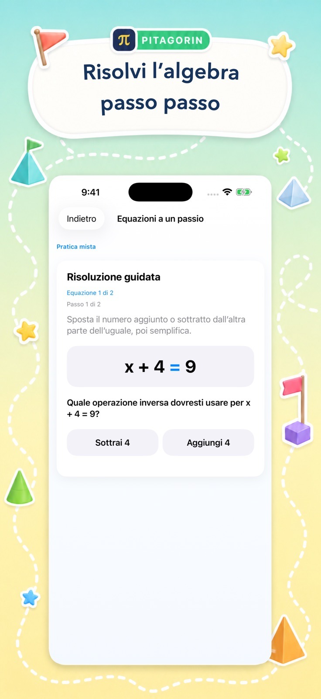

L’esperienza reale
Chiara per imparare. Vivace per tornare.
Queste sono schermate reali di Pitagorin. Ognuna unisce un compito matematico preciso a segnali visivi invitanti e a un’azione successiva chiara.
Quattro momenti di apprendimento
Dal richiamo rapido al ragionamento guidato.
L’interfaccia cambia con l’obiettivo: dinamica nelle sfide, tranquilla per imparare ed esplicita nell’algebra.




Progettata per concentrarsi
Anche la decorazione ha uno scopo.
Il colore invita all’attività, mentre l’area di lavoro resta spaziosa e leggibile.
Espressioni grandi e spazi generosi rendono facile individuare il compito.
Ogni schermata limita le azioni concorrenti e rende evidente il passo successivo.
Il supporto appare quando è utile senza interrompere ogni tentativo.
Punteggi, tempo, padronanza e storico danno una direzione concreta.
Fai il passo successivo
Prova l’esperienza reale.
Scarica Pitagorin gratis su iPhone o iPad, oppure scopri prima tutte le modalità.